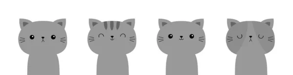

Página Secundaria sobre Michi
Como Cuidar un Gatito Bebé
Cuidar de un gato bebé requiere atención y cuidado constante. Es importante asegurarse de que el gatito reciba una alimentación adecuada, ya sea con leche materna o una fórmula de reemplazo de leche para gatitos. Además, proporciona un entorno seguro, eliminando objetos peligrosos y limitando su acceso a áreas potencialmente dañinas.
Los gatitos son juguetones y curiosos, así que es necesario brindarles estimulación y juego. Proporciona juguetes seguros y juega con ellos regularmente. Además, enseña al gatito a utilizar la caja de arena y mantén su área de dormir y juego limpia.
No olvides programar visitas regulares al veterinario para revisar su salud, administrar vacunas y desparasitarlo. Realiza un cuidado básico de aseo, como cepillar suavemente su pelaje y bañarlo según sea necesario.
Finalmente, dedica tiempo de calidad para socializar con el gatito, brindándole cariño y atención. Observa y responde a las necesidades individuales de tu gato bebé y, en caso de dudas o inquietudes, no dudes en consultar con un veterinario.